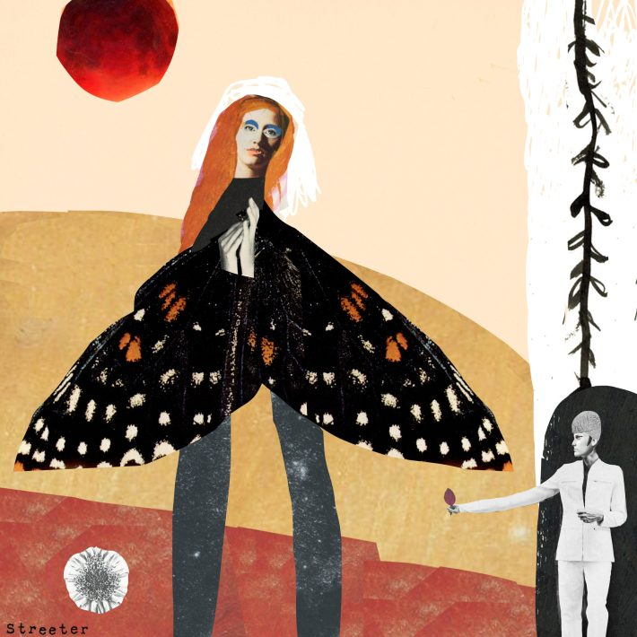
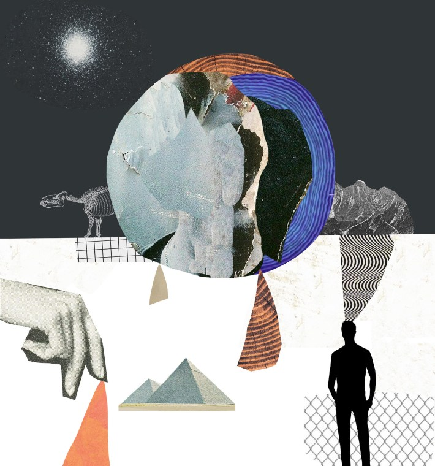
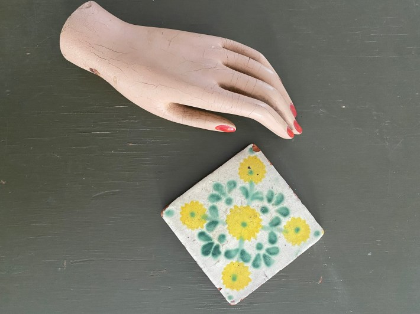
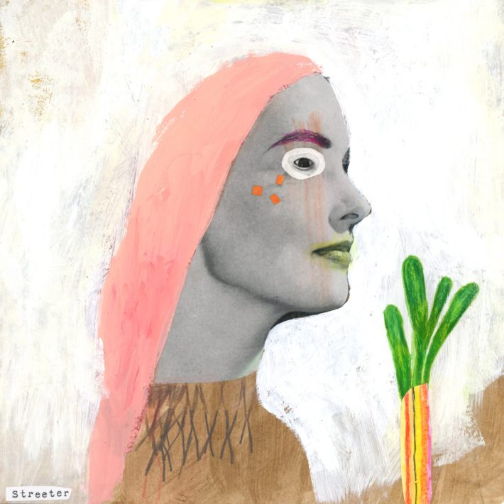
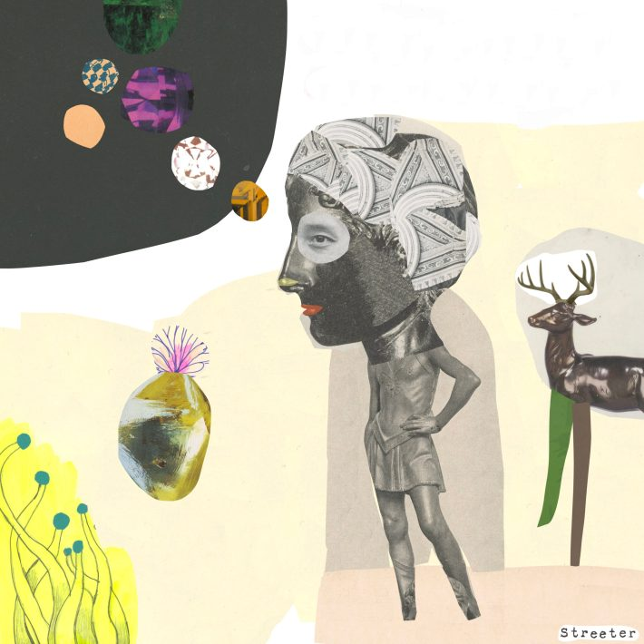

This article is part of series of Nautilus interviews with artists, you can read the rest here.
Artist Katherine Streeter works with what she’s got—literally. The New York City collagist uses found objects like dolls, magazine clippings, and old advertisements to build layered narratives into her work. The results are uncanny: repurposed faces atop impossible bodies enjoying new life on her canvases. Streeter’s work has been showcased in Harper’s, The New York Times, and Nautilus, and she recently sat down to answer our questions about her creative process, why she prefers found objects, and what scientists can learn from artists.
How did you decide pursuing art was the path you wanted to take?
I always knew my path was art. It’s been one of the few things in my life that I never doubted for a second. As far back as my memory goes, I loved telling visual stories and creating narratives. Before I understood what being a professional artist meant, I was drawing and collaging in notebooks. As a teenager, inspiration came from the underground culture around me in the new media—the MTV of the 1980s, and art galleries, as well as from an obsession with magazines. Once I had to define a career path, art school gave me a bigger understanding of it, and I was very excited to work hard to find my voice, and to figure out where I might fit into it all.

"Witchy Moon" - "This was inspired by the beauty of Nature and the forces of the full moon." Image courtesy of Katherine Streeter.
Can you walk us through your creative process?
My process is a lot like the concept of collage itself, it’s something pieced together from a lot of different bits. There are scraps and notes and sketches. I keep cut-out faces and shape clippings from various printed materials. I have two different approaches depending on the project: If it’s a commercial assignment or a commission, I start with the topic or content, and I plan the art around it. If I'm working on personal work, I often don’t have a defined starting point. I tend to experiment more and allow it to be a stream of consciousness.

Nautilus: Issue 47 cover. By Katherine Streeter.
You created the art for the cover story of Nautilus Issue 47, “The Great Forgetting,” about how the Earth is losing its memory. What about that story captured your imagination?
The story was very moving, and I loved the way Summer Praetorius wrote it. The experiences of her brother juxtaposed to the Earth's history unfolded in a way that allowed for empathy and understanding. The realization that there are consequences in science and nature seems obvious, but we are often too close to really see it objectively. I was inspired to focus on the fact that the Earth has layered experiences, just like humans do. One event can have a ripple effect on multiple levels, and every occurrence informs the next; every piece of the story has meaning; a cause and effect.
The story felt perfect for a collage. The metaphorical layers showing themselves in time made me think of pasted posters on city buildings. I thought of the texture of it all; the peeling edges revealing the faded details. The weather damage taking its toll, and yet, in life, we mostly take it for granted and assume that the destruction will be covered up with newness.
Is there anything you think scientists can learn from artists—or vice versa?
Both science and art make sense of abstract concepts, and nature is constantly adapting to change in mysterious ways. I think that science can borrow intuition from artists because highly creative people embrace mystery with ease. On the other hand, science can inspire artists to pay attention to patterns in nature. This is an important aspect of creation; repetition can inform their artistic approach and understanding of their own work.

"My obsession with hands and dolls sparked a curious collection of objects like this old mannequin part. The tile with the lovely pattern is one of a few that I have. It's important to me to decorate my art space with things I admire." Photo courtesy of Katherine Streeter
A lot of your work features found objects, magazine cuttings, and other repurposed material. What attracts you to incorporating existing objects into your art?
I love photography, and as much as I love taking photos, I rarely use my own for my collages. I am attracted to the printed pieces of history, and inspired to use faces that evoke a dreamy nostalgic quality. Repurposing elements from our human timeline feels like building layers for a new narrative, which is similar to the concept of layering an underpainting on a canvas.
When you’re looking for potential items to use in your art, what sparks your interest?
I love the colors of old inks on old papers, and the textures of old book pages. The imperfections in printing inspire my work. Sometimes starting with something that is destroyed can release the pressure to keep it nice, or be perfect. Flea markets and thrift shops are places where I sometimes look for my materials.

"Spring" - "This is a quiet homage to the simple pleasure of green growth in springtime." Image courtesy of Katherine Streeter
How do you approach personal art versus commercial projects?
My personal art is constantly shaping itself because it comes from everyday experiences. Thought patterns form into concepts, and witnessing moments during the day can occupy creative mental space to grow from. I’m sure we all do that; as creative people, we see the world around us as spark plugs that can ignite an idea to launch from. My commercial art is a different mindset than this, although I still adhere to dreamy methods when working with clients. My favorite commissioned projects start with just a few words or one broad idea because sometimes less is more for me. I like to cast a wide net from there and invent concepts that are both abstract and literal. I'm equally challenged by projects that are based on a lot of information upfront as well. It’s a good exercise to start with a big pile of hay to find a needle in. For me, commercial work has always been a great balance of art-making and problem-solving.
How do you decide when a personal project is finished?
I'm probably echoing most artists by saying that it is mostly just a feeling. I tend to be a perfectionist, which surprises people because my work is nothing like what one thinks of in that regard. There are no life-like elements outside of my collage pieces. I don’t focus on rendering, perspectives, or color theory in the same ways we were taught in art school. My process is mostly intuitive and guided by impulses, even in the sketch phase. The concept of completion varies from piece to piece. To call something finished is to feel that I cannot do any more to it, or make it any better. I have learned that sometimes not trusting my gut on this will lead to overthinking and overworking it, which can lessen its power.

"Forethought" - "This is a piece about mindfulness. I honor the mystery of nature that surrounds the moments of head and heart guidance." Image courtesy of Katherine Streeter
Do you have any upcoming projects you’re excited about?
I have a lot of personal projects planned for the new year that I'm excited about. I’m also looking forward to challenging myself in some new ways, like working on a larger scale, and building on existing series of works. Getting out of my comfort zone is important and a necessary reminder that I’m constantly learning, and if I keep doing only what has worked in the past, I will risk stagnation. I often think of Newton’s First Law of Motion in this way; that if I stay in motion I will remain in motion. I aim to embrace this inside of the studio as well as in life!
Interview by Jake Currie.
Lead image courtesy of Katherine Streeter.
Källförteckning
- Originalartikel: https://nautil.us/katherine-streeter-interview-1191388/